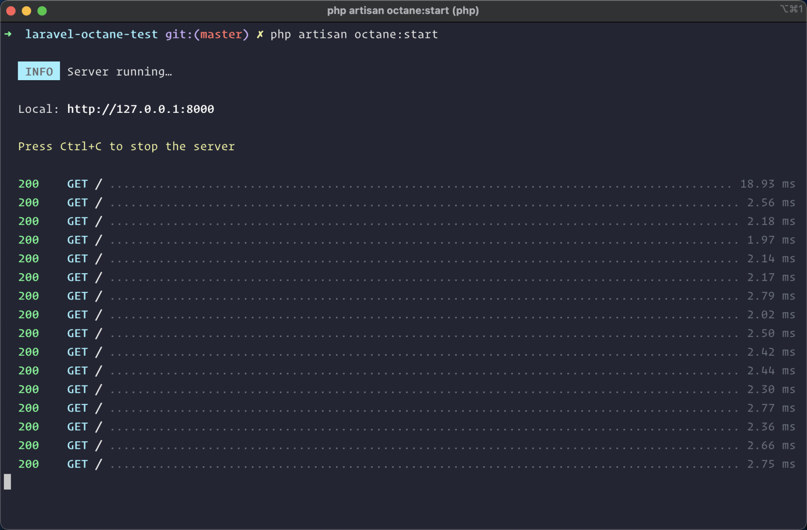
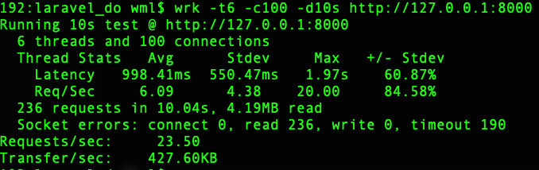
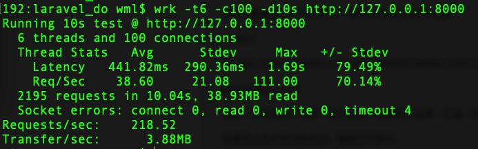
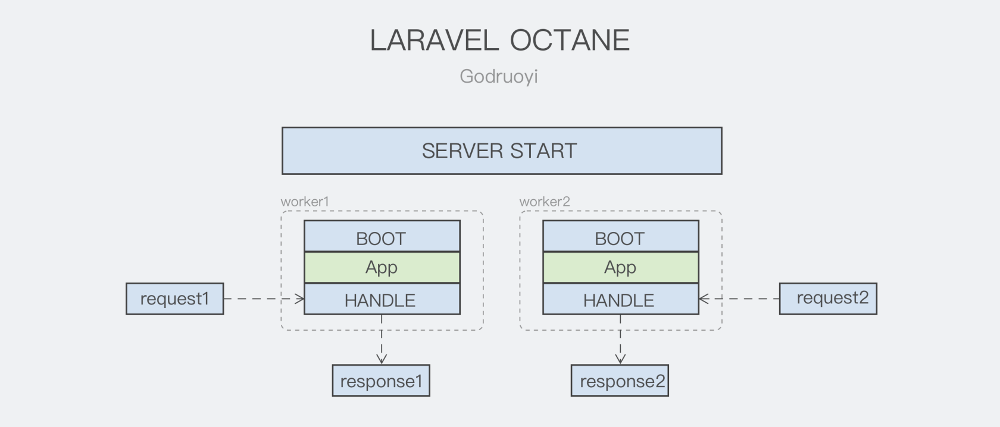

Laravel 框架一直很优秀，但是他在性能方面却一直为人诟病。框架的 boot 时间可能比业务处理时间还长，并且随着项目第三方 service provider 的增多，其启动速度越来越不受控。而 Laravel Octane 则通过启动 Application 一次，常驻内存的方式来加速我们的应用。接下来我们介绍Laravel Octane 扩展的使用。
Laravel Octane 内置了两个高性能的应用服务：Swoole 和 RoadRunner
注意 Laravel Octane 需要 PHP8.0 以上版本。
PHP是一种解释语言。这意味着，当PHP脚本运行时，解释器会对每个请求反复解析、编译和执行代码。这会导致CPU资源的浪费和花费额外的时间。
Swoole所做的是将编译后的脚本/容器存储到内存中，以便在接受下一个请求时重用。有了这些功能，你的应用不需要一次又一次地重新编译脚本。
虽说官方文档已经描述的很详细，不过作者这里还是通过一个简单的示列项目来演示。
➜ laravel new laravel-octane-test
_ _
| | | |
| | __ _ _ __ __ ___ _____| |
| | / _` | '__/ _` \\ \\ / / _ \\ |
| |___| (_| | | | (_| |\\ V / __/ |
|______\\__,_|_| \\__,_| \\_/ \\___|_|
Creating a "laravel/laravel" project at "./laravel-octane-test"
Installing laravel/laravel (v8.5.16)
...
Application ready! Build something amazing.$ composer require laravel/octane安装成功后，读者可以直接执行 php artisan octane:install 来安装依赖；Octane 将提示你想使用的 server 类型。
➜ php artisan octane:install
Which application server you would like to use?:
[0] roadrunner
[1] swoole
>如果你选择的是 RoadRunner，程序将会自动帮你安装 RoadRunner 所需的依赖；而如果你选择的是 Swoole，你只需要确保你已经手动安装了 PHP swoole 扩展。
建议使用 Swoole，RoadRunner 的使用过程不尽人意，在安装过程中总会出现一些官方文档忽视的错误。下面已 swoole 为例说明
安装好 PHP swoole 扩展后，无需任何配置就能启动服务。
服务启动命令
php artisan octane:start默认情况下，Octane 将在端口 8000 上启动服务器，因为您可以通过 http://localhost:8000 在浏览器中访问您的应用程序。
访问该路由并查看 Laravel 应用程序！ 如果你发出了多个请求，将会看到第一个请求稍微慢一点，因为这是框架启动的地方，而其他请求则明显更快，因为它们可以从内存中使用启动后的框架。

请求数 23.5 次每秒

请求数可以达到 218.52 次每秒

在同样代码、机器配置，网络环境下可以看到，swoole驱动时性能提升了将近10倍
Laravel Octane 虽然提供了 start 命令用于启动 Server，但该命令只能在前台运行（不支持 -d）；在部署到生产环境时，常见的办法还是利用 Supervisor 来进行进程管理。可参考 如下 Supervisor 配置。
[program:laravel_octane_server]
command = /usr/local/php/bin/php -d variables_order=EGPCS /www/laravel/artisan octane:start --port=8001 --max-requests=5000 --workers=4 --task-workers=4
user=www
process_name = %(program_name)s_%(process_num)s
numprocs = 1
autostart = true
autorestart = true
stdout_logfile = /alidata/log/supervisor/laravel_do_server_out.log
stdout_logfile_maxbytes = 10MB
stderr_logfile = /alidata/log/supervisor/laravel_do_server_err.log
stderr_logfile_maxbytes = 10MB
redirect_stderr=true方法一、使用 octane:reload 命令重新加载服务。
php artisan config:cache && php artisan route:cache && php artisan octane:reload方法二、通过 supervisorctl 重启服务
当你更新了 Composer 依赖，如新增了一个第三方包时，你最好在生产环境重启下 Laravel Octane。否则可能会出现如 Class “Godruoyi\Snowflake\Snowflake” not found 的错误。
php artisan config:cache && php artisan route:cache && sudo supervisorctl -c /etx/supervisorctl.conf restart program:laravel_octane_server通过持续交付部署工具，运行上述命令中的其中一个即可。
要注意 php artisan octane:reload 有时候代码不更新的问题， 可以测试下看看， 但 restart 会导致进程暂时终止，如果此时有大量请求会报 502 , 这个测试下自己权衡。
在启动服务后，如果我们更改了代码，访问时会发现显示并没有发送改变！ 这是因为请求访问的是 Octane 服务内存中的框架（及其所有路由 / 代码）。 因此，为了查看代码更改，需要重启 Octane 服务。 这导致在开发过程中非常麻烦，所以 Octane 提供了一种很好的方式来自动监视代码库的更改并自动重启 Octane 服务。
为了完成这项工作，请确保安装 Chokidar - 基于 NodeJS 的文件监视库：
npm install --save-dev chokidar然后，您可以在 “watch” 模式下启动 Octane 服务器，如下所示：
php artisan octane:start --watch现在，下次您对代码库进行更改时，系统会检测到这一点，Octane 将为请求重启工作程序，您可以立即看到您的更改。
默认情况下，Octane 会根据机器 CPU 的内核数来启动对应数量的请求处理器进程（Worker），你也可以在基于 Octane 启动服务器时通过 --workers 参数手动指定 Worker 数量：
php artisan octane:start --workers=4如果使用的是Swoole应用程序服务器，则还可以指定要启动的“任务工作者”数量：
php artisan octane:start --workers=4 --task-workers=6PHP 应用常驻内存带来的另一个问题是内存泄露，你可以通过 --max-request 参数指定一个 Worker 最多能够处理的请求数来解决这个问题：
php artisan octane:start --max-requests=250当超过这个限制后，Octane 会优雅重启该 Worker。
和 Nginx 类似，你可以通过 roload 指令优雅重启所有 PHP Worker 进程：
php artisan octane:reload您可以使用octane:stopArtisan命令停止Octane服务器：
php artisan octane:stopphp artisan octane:statusmap $http_upgrade $connection_upgrade {
default upgrade;
'' close;
}
# 负载均衡配置
#upstream api_list{
# server 127.0.0.1:8020;
# server 127.0.0.1:8025;
#}
server {
listen 80;
listen [::]:80;
server_name domain.com;
server_tokens off;
root /alidata/www/laravel-do/public;
index index.html index.htm index.php default.html default.htm default.php;
charset utf-8;
error_page 404 /index.php;
location /index.php {
try_files /not_exists @octane;
}
location / {
try_files $uri $uri/ @octane;
}
location = /favicon.ico { access_log off; log_not_found off; }
location = /robots.txt { access_log off; log_not_found off; }
location ~ .*\\.(gif|jpg|jpeg|png|bmp|swf)$
{
expires 30d;
}
location ~ .*\\.(js|css)?$
{
expires 12h;
}
location ~ /.well-known {
allow all;
}
location ~ /\\.
{
deny all;
}
access_log /alidata/log/nginx/domain.com.log main;
error_log /alidata/log/nginx/nginx_error.log;
location @octane {
set $suffix "";
if ($uri = /index.php) {
set $suffix ?$query_string;
}
proxy_http_version 1.1;
proxy_set_header Host $http_host;
proxy_set_header Scheme $scheme;
proxy_set_header SERVER_PORT $server_port;
proxy_set_header REMOTE_ADDR $remote_addr;
proxy_set_header X-Forwarded-For $proxy_add_x_forwarded_for;
proxy_set_header Upgrade $http_upgrade;
proxy_set_header Connection $connection_upgrade;
proxy_pass http://127.0.0.1:8000$suffix;
# 负载均衡配置
# proxy_pass http://api_list$suffix;
}
}
在回答这个问题之前，我们先来看看 Laravel Octane 的请求处理流程。

随着 Server 的启动，程序会创建指定数量的 Worker 进程。当请求到来时，会从可用的 Worker 列表中选取一个并交由他处理。每个 Worker 同一时刻只能处理一个请求，在请求处理过程中，对资源（变量 / 静态变量 / 文件句柄 / 链接）的修改并不会存在竞争关系，所以 Laravel Octane 时线程 (进程) 安全的。
这其实和 FPM 模型是一致的，不同的地方在于 FPM 模型在处理完一个请求后，会销毁该请求申请的所有内存；后续请求到来时，依然要执行完整的 PHP 初始化操作（参考 PHP-FPM 启动分析）。而 Laravel Octane 的初始化操作是随着 Worker Boot 进行的，在整个 Worker 的生命周期内，只会进行一次初始操作（程序启动的时候）。后续请求将直接复用原来的资源。如上图，Worker Boot 完成后，将会初始化 Laravel Application Container，而后续的所有请求，都将复用该 App 实例。
Octane 只是一个壳，真正处理请求都是由外部的 Server 处理的。不过 Octane 的设计还是值得一说的。
从源码也可以看出，随着 Worker 的 Boot 完成，Laravel Application 已被成功初始化。
// vendor/laravel/octane/src/Worker.php
public function boot(array $initialInstances = []): void
{
$this->app = $app = $this->appFactory->createApplication(
array_merge(
$initialInstances,
[Client::class => $this->client],
)
);
$this->dispatchEvent($app, new WorkerStarting($app));
}在处理后续到来的请求时，Octane 通过 clone $this->app 获取一个沙箱容器。后续的所有操作都是基于这个沙箱容器来进行的，不会影响到原有的 Container。在请求结束后，Octane 会清空沙箱容器并 unset 不再使用的对象。
public function handle(Request $request, RequestContext $context): void
{
CurrentApplication::set($sandbox = clone $this->app);
try {
$response = $sandbox->make(Kernel::class)->handle($request);
} catch (Throwable $e) {
$this->handleWorkerError($e, $sandbox, $request, $context, $responded);
} finally {
$sandbox->flush();
unset($gateway, $sandbox, $request, $response, $octaneResponse, $output);
CurrentApplication::set($this->app);
}
}再次注意，由于同一个 Worker 进程同一时刻只能处理一个请求，故这里是不存在竞争的，即使是对 static 变量的修改，也是安全的。
由于一个 Worker 会处理多个请求，而在同一个 Worker 中，只会在初始化时加载一次 Laravel 应用，后面的请求会复用第一次加载的服务容器（意味着所有服务提供者的 register 和 boot 方法只有第一次加载时会被调用，这就是所谓的「常驻内存」），所以我们在切换到基于 Laravel Octane 驱动 的 HTTP 服务器时，对于服务注入要格外小心，不要将后续会变动的对象以单例模式注入服务容器，也不要让有状态的数据被所有请求共享。
Octane 会在不同请求间自动处理所有官方框架提供功能的状态重置，但是无法重置你自己在业务代码中编写的全局状态，这里我们列举一些常见的容易出问题的几个典型示例，如果你的业务代码目前存在这些问题，需要进行调整。
不要将服务容器、请求实例或者其他会发生变动的对象以单例模式注入到某个服务的构造函数：
use App\\Service;
/**
* Register any application services.
*
* @return void
*/
public function register()
{
$this->app->singleton(Service::class, function ($app) {
return new Service($app);
});
}这会导致后续请求只能解析出初次调用该 register 方法时传入构造函数的对象。要解决这个问题，可以通过普通模式注入或者闭包方式注入：
use App\\Service;
use Illuminate\\Container\\Container;
$this->app->bind(Service::class, function ($app) {
return new Service($app);
});
$this->app->singleton(Service::class, function () {
return new Service(fn () => Container::getInstance());
});
请求注入和服务容器类似，因为不同用户请求对象不同，并且可能带有认证状态，所以不能在不同请求之间共享，也就不能作为构造函数参数以单例模式注入服务容器：
use App\\Service;
/**
* Register any application services.
*
* @return void
*/
public function register()
{
$this->app->singleton(Service::class, function ($app) {
return new Service($app['request']);
});
}例子中采用 singleton 注册一个单例对象 Service，当该对象在某个 Provider 的 Boot 方法被初始化时，应用容器中将始终保持着唯一的 Service 对象；后续 Worker 在处理的其他请求时，从 Service 中获取的 request 对象将是相同的。
解决思路和服务容器一样，通过普通模式注入或闭包模式注入即可
use App\\Service;
$this->app->bind(Service::class, function ($app) {
return new Service($app['request']);
});
$this->app->singleton(Service::class, function ($app) {
return new Service(fn () => $app['request']);
});
// 或者，还可以直接在服务方法中传入具体请求字段值
$service->method($request->input('name'));对于控制器而言，由于其构造函数也是在服务注册初始化期间完成的，所以不要在其构造函数中注入请求对象，但是可以在具体的控制器方法中注入 Illuminate\Http\Request 实例获取请求信息。
应用配置也是一个会在运行时发生变更的对象，所以不应该在单例模式服务注入时以构造函数参数形式传入：
use App\\Service;
/**
* Register any application services.
*
* @return void
*/
public function register()
{
$this->app->singleton(Service::class, function ($app) {
return new Service($app->make('config'));
});
}解决方案还是普通模式注入和闭包模式注入：
use App\\Service;
use Illuminate\\Container\\Container;
$this->app->bind(Service::class, function ($app) {
return new Service($app->make('config'));
});
$this->app->singleton(Service::class, function () {
return new Service(fn () => Container::getInstance()->make('config'));
});请记住，Octane在两次请求之间将您的应用程序保留在内存中；因此，将数据添加到静态维护的阵列将导致内存泄漏。例如，由于对应用程>序的每个请求将继续向静态$data数组添加数据，因此以下控制器发生内存泄漏：
se App\\Service;
use Illuminate\\Http\\Request;
use Illuminate\\Support\\Str;
/**
* Handle an incoming request.
*
* @param \\Illuminate\\Http\\Request $request
* @return void
*/
public function index(Request $request)
{
Service::$data[] = Str::random(10);
// ...
}关于 Laravel Octane 配置 Swoole 服务的更多使用请参考：https://laravel.com/docs/8.x/octane#swoole